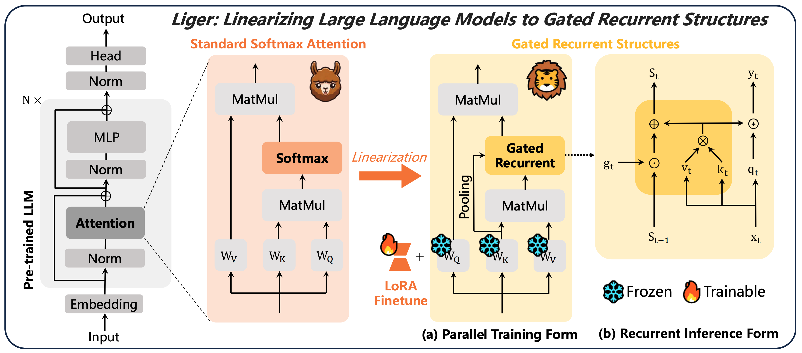
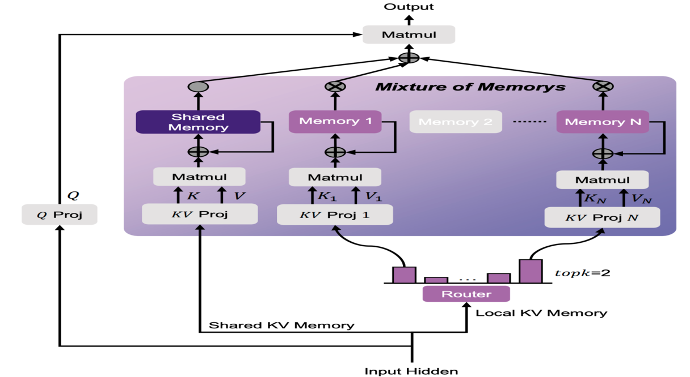

Disen Lan (蓝迪森)I am a final year undergraduate student majoring in computer science at the School of Computer Science & Engineering, South China University of Technology, and an incoming Ph.D. in the School of Computer Science at Fudan University for 2025 fall intake, advised by Prof. Yu Cheng and Prof. Xipeng Qiu . My research interests focus on Efficient (Multi-modal) Large Language Models for sequence modeling, reasoning and generation. |
Publications
-
Liger: Linearizing Large Language Models to Gated Recurrent Structures
Disen Lan, Weigao Sun, Jiaxi Hu, Jusen Du, Yu Cheng
International Conference on Machine Learning (ICML), 2025
-
Linear-MoE: Linear Sequence Modeling Meets Mixture-of-Experts
Weigao Sun, Disen Lan, Tong Zhu, Xiaoye Qu, Yu Cheng
International Conference on Learning Representations (ICLR) on SCOPE Workshop, 2025
Oral Presentation & Outstanding Paper Honorable Mention üèÜ
-
LASP-2: Rethinking Sequence Parallelism for Linear Attention and Its Hybrid
Weigao Sun, Disen Lan, Yiran Zhong, Xiaoye Qu, Yu Cheng
arXiv Preprint
-
MoM: Linear Sequence Modeling with Mixture-of-Memories
Jusen Du, Weigao Sun, Disen Lan, Jiaxi Hu, Yu Cheng
arXiv Preprint
-
Diffusion Graph Model for Time Series Anomaly Detection via Anomaly-aware Graph Sparsification and Augmentation
Disen Lan*, Guibin Zhang*, Rongjin Guo
International World Wide Web Conference (WWW) on AI4TS Workshop, 2025
Oral Presentation
-
Diffusion Language-Shapelets for Semi-supervised Time-Series Classifcation
Zhen Liu, Wenbin Pei, Disen Lan, Qianli Ma
Annual AAAI Conference on Artificial Intelligence (AAAI), 2024
-
TimeFilter: Patch-Specific Spatial-Temporal Graph Filtration for Time Series Forecasting
Yifan Hu*, Guibin Zhang*, Peiyuan Liu*, Disen Lan, Naiqi Li, Dawei Cheng, Tao Dai, Shu-Tao Xia, Shirui Pan
International Conference on Machine Learning (ICML), 2025
-
Time-SSM: Simplifying and Unifying State Space Models for Time Series Forecasting
Jiaxi Hu, Disen Lan, Ziyu Zhou, Qingsong Wen, Yuxuan Liang
arXiv Preprint
Experiments
-
Shanghai Artificial Intelligence Laboratory
Research Intern, 2024.9~2025.3
Advisor: Dr. Weigao Sun and Prof. Yu Cheng
Research Topic: Efficient Large Language Models
-
Tencent
Research Intern, 2024.6~2024.8
Research Topic: Natural Language Processing, Time Series Modeling
-
The Hong Kong University of Science and Technology (Guangzhou)
Research Intern, 2023.8~2024.5
Advisor: Prof. Yuxuan Liang
Research Topic: Time Series Analysis, Spatio-temporal Data Mining
-
 South China University of Technology
South China University of Technology
Research Intern, 2023.3~2023.8
Advisor: Prof. Qianli Ma
Research Topic: Time Series Analysis, Diffusion Models
Honors & Awards
- National Scholarship (three times): 2022, 2023, 2024
- Tencent Enterprise First Prize Scholarship, 2024
- Interdisciplinary Contest In Modeling (ICM): Finalist (Top 2% globally), 2023
- China Undergraduate Mathematical Contest in Modeling (Guangdong): First Prize, 2023
- The Chinese Mathematics Competitions (Guangdong): First Prize, 2022
- Lan Qiao Cup Programming Competitions (Guangdong): First Prize, 2024
- Greater Bay Area Cup Guangdong-Hong Kong-Macao Financial Mathematical Modeling: First Prize, 2022
- Asia and Pacific Mathematical Contest in Modeling (APMCM): Second Prize, 2023
Services
- Conference Reviewer: ICLR'2025, CVPR'2025, ACL'2025